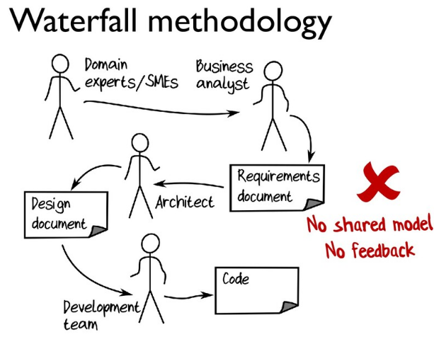
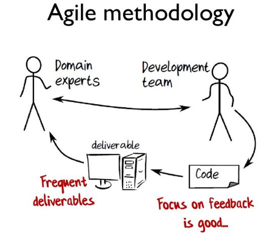
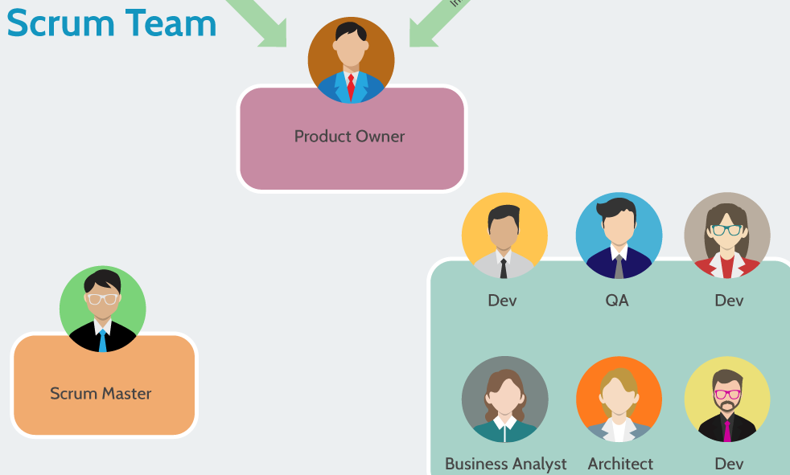
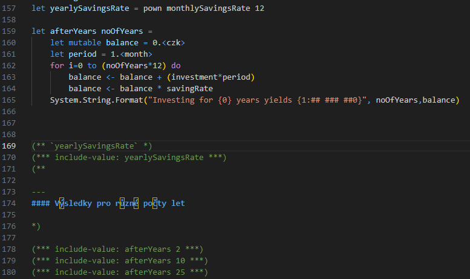

val factorial : x:int -> int
Full name: Index.factorial
Full name: Index.factorial
val x : int
Multiple items
module List
from Microsoft.FSharp.Collections
--------------------
type List<'T> =
| ( [] )
| ( :: ) of Head: 'T * Tail: 'T list
interface IEnumerable
interface IEnumerable<'T>
member GetSlice : startIndex:int option * endIndex:int option -> 'T list
member Head : 'T
member IsEmpty : bool
member Item : index:int -> 'T with get
member Length : int
member Tail : 'T list
static member Cons : head:'T * tail:'T list -> 'T list
static member Empty : 'T list
Full name: Microsoft.FSharp.Collections.List<_>
module List
from Microsoft.FSharp.Collections
--------------------
type List<'T> =
| ( [] )
| ( :: ) of Head: 'T * Tail: 'T list
interface IEnumerable
interface IEnumerable<'T>
member GetSlice : startIndex:int option * endIndex:int option -> 'T list
member Head : 'T
member IsEmpty : bool
member Item : index:int -> 'T with get
member Length : int
member Tail : 'T list
static member Cons : head:'T * tail:'T list -> 'T list
static member Empty : 'T list
Full name: Microsoft.FSharp.Collections.List<_>
val reduce : reduction:('T -> 'T -> 'T) -> list:'T list -> 'T
Full name: Microsoft.FSharp.Collections.List.reduce
Full name: Microsoft.FSharp.Collections.List.reduce
val fibonacci : x:int -> int
Full name: Index.fibonacci
Full name: Index.fibonacci
Multiple items
type MeasureAttribute =
inherit Attribute
new : unit -> MeasureAttribute
Full name: Microsoft.FSharp.Core.MeasureAttribute
--------------------
new : unit -> MeasureAttribute
type MeasureAttribute =
inherit Attribute
new : unit -> MeasureAttribute
Full name: Microsoft.FSharp.Core.MeasureAttribute
--------------------
new : unit -> MeasureAttribute
[<Measure>]
type czk
Full name: Index.czk
type czk
Full name: Index.czk
[<Measure>]
type month
Full name: Index.month
type month
Full name: Index.month
val investment : float<czk/month>
Full name: Index.investment
Full name: Index.investment
val monthlySavingsRate : float
Full name: Index.monthlySavingsRate
Full name: Index.monthlySavingsRate
val yearlySavingsRate : float
Full name: Index.yearlySavingsRate
Full name: Index.yearlySavingsRate
val pown : x:'T -> n:int -> 'T (requires member get_One and member ( * ) and member ( / ))
Full name: Microsoft.FSharp.Core.Operators.pown
Full name: Microsoft.FSharp.Core.Operators.pown
val afterYears : noOfYears:int -> string
Full name: Index.afterYears
Full name: Index.afterYears
val noOfYears : int
val mutable balance : float<czk>
val period : float<month>
val i : int
namespace System
Multiple items
type String =
new : value:char -> string + 7 overloads
member Chars : int -> char
member Clone : unit -> obj
member CompareTo : value:obj -> int + 1 overload
member Contains : value:string -> bool
member CopyTo : sourceIndex:int * destination:char[] * destinationIndex:int * count:int -> unit
member EndsWith : value:string -> bool + 2 overloads
member Equals : obj:obj -> bool + 2 overloads
member GetEnumerator : unit -> CharEnumerator
member GetHashCode : unit -> int
...
Full name: System.String
--------------------
System.String(value: nativeptr<char>) : unit
System.String(value: nativeptr<sbyte>) : unit
System.String(value: char []) : unit
System.String(c: char, count: int) : unit
System.String(value: nativeptr<char>, startIndex: int, length: int) : unit
System.String(value: nativeptr<sbyte>, startIndex: int, length: int) : unit
System.String(value: char [], startIndex: int, length: int) : unit
System.String(value: nativeptr<sbyte>, startIndex: int, length: int, enc: System.Text.Encoding) : unit
type String =
new : value:char -> string + 7 overloads
member Chars : int -> char
member Clone : unit -> obj
member CompareTo : value:obj -> int + 1 overload
member Contains : value:string -> bool
member CopyTo : sourceIndex:int * destination:char[] * destinationIndex:int * count:int -> unit
member EndsWith : value:string -> bool + 2 overloads
member Equals : obj:obj -> bool + 2 overloads
member GetEnumerator : unit -> CharEnumerator
member GetHashCode : unit -> int
...
Full name: System.String
--------------------
System.String(value: nativeptr<char>) : unit
System.String(value: nativeptr<sbyte>) : unit
System.String(value: char []) : unit
System.String(c: char, count: int) : unit
System.String(value: nativeptr<char>, startIndex: int, length: int) : unit
System.String(value: nativeptr<sbyte>, startIndex: int, length: int) : unit
System.String(value: char [], startIndex: int, length: int) : unit
System.String(value: nativeptr<sbyte>, startIndex: int, length: int, enc: System.Text.Encoding) : unit
System.String.Format(format: string, [<System.ParamArray>] args: obj []) : string
System.String.Format(format: string, arg0: obj) : string
System.String.Format(provider: System.IFormatProvider, format: string, [<System.ParamArray>] args: obj []) : string
System.String.Format(provider: System.IFormatProvider, format: string, arg0: obj) : string
System.String.Format(format: string, arg0: obj, arg1: obj) : string
System.String.Format(provider: System.IFormatProvider, format: string, arg0: obj, arg1: obj) : string
System.String.Format(format: string, arg0: obj, arg1: obj, arg2: obj) : string
System.String.Format(provider: System.IFormatProvider, format: string, arg0: obj, arg1: obj, arg2: obj) : string
System.String.Format(format: string, arg0: obj) : string
System.String.Format(provider: System.IFormatProvider, format: string, [<System.ParamArray>] args: obj []) : string
System.String.Format(provider: System.IFormatProvider, format: string, arg0: obj) : string
System.String.Format(format: string, arg0: obj, arg1: obj) : string
System.String.Format(provider: System.IFormatProvider, format: string, arg0: obj, arg1: obj) : string
System.String.Format(format: string, arg0: obj, arg1: obj, arg2: obj) : string
System.String.Format(provider: System.IFormatProvider, format: string, arg0: obj, arg1: obj, arg2: obj) : string
Kdo je Tomáš
- Českolipský rodák
- Táta(kamarádky(dcery(vaší paní učitelky)))
- Student: FSG Pirna, GCL, (MFF UK Praha)^4
- Učení: FIT CVUT pro Erasmus studenty, hostování na Uni Konstanz, + konference

Informatika na MFF UK
-
Hodně matematiky, široký základ je povinný.
- Mat. analýza, diskrétní matematika, linární algebra, kombinatorika a grafy, výroková a predikátová logika, optimalizační metody, teorie množin, složitost, vyčíslitelnost,..
- Hodně možností průchodu vyšších ročníků skrze obory a volitelné předměty
- Čistá teorie, praktické programování, vývoj her, AI, ...
Život doktoranda
- Často kombinované s prací
- (nebo model komerčních spoluprací)
- Jde o výzkum (Research), ne programování podle zadání
- Granty, články na konference, časopisy
- Spousta možností cestovat po světě!
- Velmi úzké téma, velmi do hloubky, state-of-the-art celosvětově
IT kariéra
- idioma - Computer-aided translation SW (CAT) - Toyota, Komatsu, Nikkon, Canon,..
- Commerzbank AG - regulatorika pro investiční bankovnictví
- Barclays - Risk, Finance and Treasury - stresové simulace pro akciové trhy
- Microsoft - Cloud and AI - programovací jazyk FSharp (evoluce, kompilátor, nástroje)
Různé role - JFDI v menší firmě
- Uživatel nebo jejich zástupce
- Programátor
- (konec)
Různé role - waterfall

Různé role - agile

Různé role - agile, but..

Domény
- Definují oblasti pro uplatnění software
- Taktéž oblasti expertízy a let učení se
- Specifika: Life-critical, hard real-time, automotive, finance aj.
- Regulatorní požadavky, risk pokut
-
Kalkulace ROI pro IT (příklady)
- Ne vždy platí Pareto 80-20
Kvantita
- Kolik IT systémů měla banka?
- Kolik lidí dělalo na CRM systému pro sales?
- Kolik lidí ma MSFT v Praze (Teams,Dynamics,Azure,kompilátory,..)
- Kolik má můj tým na jazyk FSharp?
Digitalizace
- Lidské workflow - příklad
-
Prototyping: Nápad - Excel - Python - IT systém
- časová náročnost může růst i 10x-100x s každým přesunem
-
Komplexita "businessu":
- Produkty investičního bankovnictví
- Scénáře
- Zdánlivé "prkotiny" jako settlement date u cenných papírů
F#
- Pro platformu .NET nebo JavaScript
- Weby, desktop SW, mobile, cloudové aplikace
- Silně typový jazyk
- Co je ten hashtag?
F#
1:
|
|
factorial 5
|
Series: [1..10] |> List.map factorial)
|
F# - rekurze
1: 2: 3: 4: |
|
fibonacci 4
|
Series: [1..10] |> List.map fibonacci)
|
Jednotky - a kolik je vysledek?
1: 2: 3: 4: 5: 6: 7: 8: 9: 10: 11: 12: 13: 14: |
|
yearlySavingsRate
|
Výsledky pro různé počty let
|
|
|
|
Making of - tyto slidy

The Reality of a Developer's Life
When I show my boss that I've fixed a bug:

When your regular expression returns what you expect: